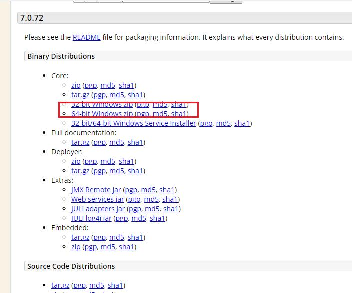

Tomcat安装及配置教程

Tomcat 服务器是一个免费的开放源代码的Web 应用服务器，属于轻量级应用服务器，在中小型系统和并发访问用户不是很多的场合下被普遍使用，是开发和调试JSP 程序的首选。
很多初学者在安装Tomcat的时候会遇到闪退的问题。
以下是我个人安装Tomcat时遇到闪退问题的解决方案，希望可以帮助到你。
下载Tomcat
1、到官网下载一个Tomcat。
http://tomcat.apache.org/在Download中选择一个版本，这里我选择的是Tomcat7.
2、点击Tomcat7，往下拉找到Core,选择自己需要的安装包，我是64位，所以选择的第4个。

3、下载到本地是可以直接使用的不需要安装。然后就是环境变量的配置。
环境变量的配置
4、环境变量的配置。我的电脑（右键）属性高级系统设置环境变量在系统变量中新建一个名为CATALINA_HOME的变量，值为你存放Tomcat的路径，这里我是放在D:\apache-tomcat-7.0.65，然后确定就配置好了
验证是否成功
5、在Tomcat目录下找到bin文件中的startup.bat，双击运行。（注意！请不要关闭启动窗口）然后在浏览器中输入：http://localhost:8080/，如果出现以下界面则表示环境配置成功，可以使用Tomcat了。
出现异常
6、如果运行startup出现闪退情况，以下方法可以帮助你解决问题，
（1）找不到JRE也就是说JDK环境没配置好。
我们首先windows+r打开cmd命令窗口，输入java命令，测试JDK是否安装，如果显示一大堆关于java的提示则表明已经安装好了。然后再测试JDK环境变量是否配置好，在cmd中输入javac命令，如果显示“javac不是内部或外部指令，也不是可运行的程序”，则环境变量未配置好；
JDK环境变量的设置：我的电脑（右键）属性高级系统设置环境变量
在系统变量中新建一个变量名为JAVA_HOME,值为D:\Java\jdk1.8.0_60
新建另一个变量名为path，值为%JAVA_HOME%\bin;%JAVA_HOME%\jre\bin;;%USERPROFILE%\AppData\Local\Microsoft\WindowsApps
再新建一个变量名为classpath，值为.;%JAVA_HOME%\lib\dt.jar;%JAVA_HOME%\lib\tools.jar;
按确定，然后在cmd命令窗口中输入javac，若出现以下界面则表明配置成功。
（2） 在启动Tomcat时需要读取环境变量和配置信息，缺少了这些信息就不能登记环境变量，导致Tomcat闪退。解决办法：
在已解压的Tomcat的bin文件夹下找到startup.bat，右键编辑，在文件头两行添加
SET JAVA_HOME=D:\Java\jdk1.6.0_10 （java jdk目录）
SET TOMCAT_HOME=E:\tomcat-6.0.35 （解压后的tomcat文件目录）
同样的，在bin文件夹下的shutdown.bat头两行添加
SET JAVA_HOME=D:\Java\jdk1.6.0_10 （java jdk目录）
SET TOMCAT_HOME=E:\tomcat-6.0.35 （解压后的tomcat文件目录）